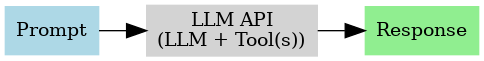
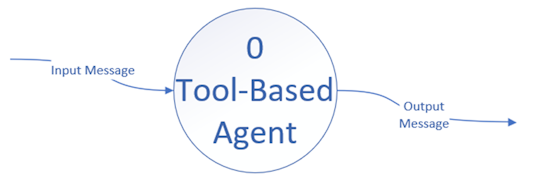
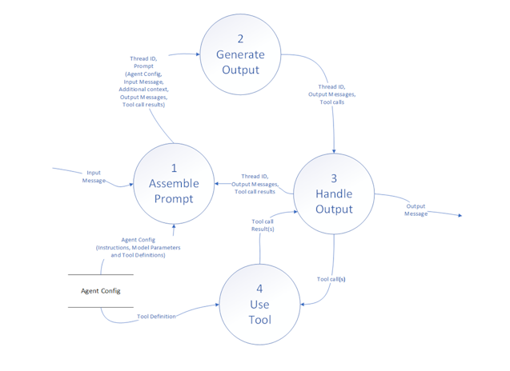
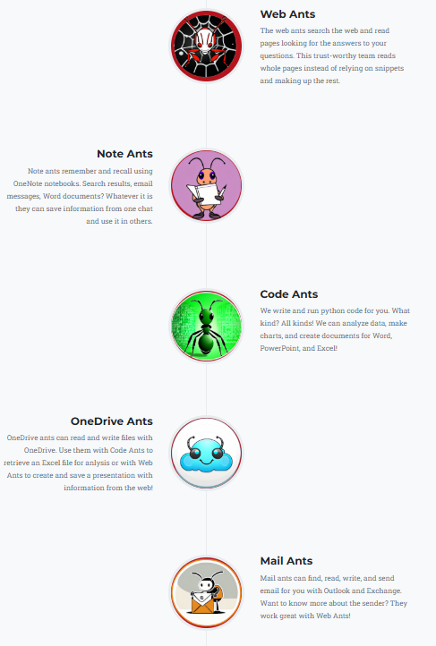
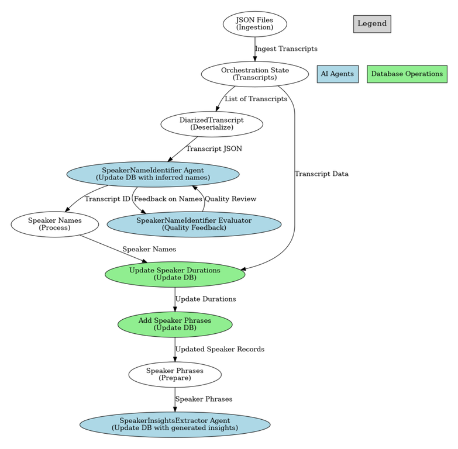
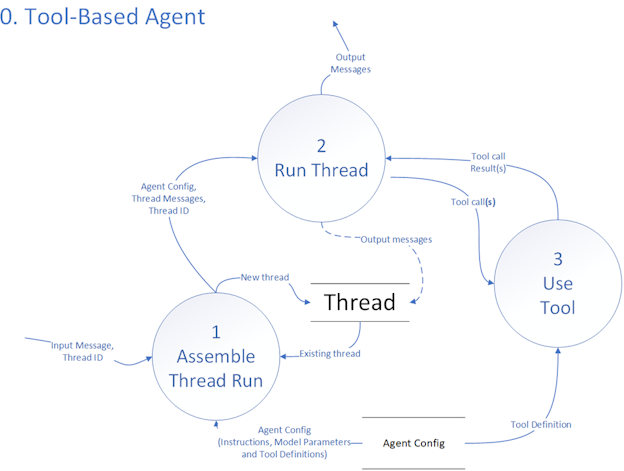
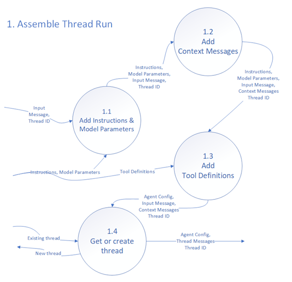
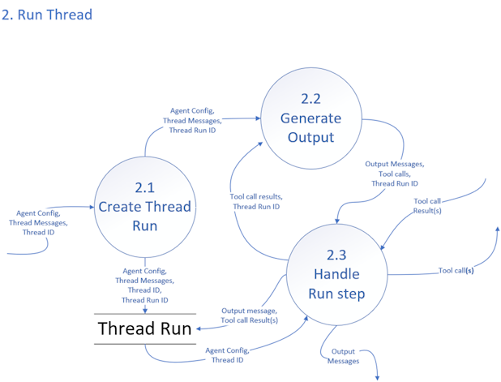
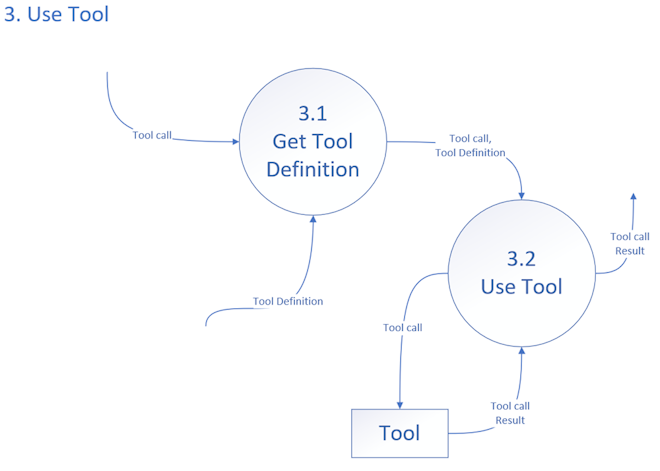

Tool-based Agent Pattern
I ended my last article, Retrieval Augmented Generation is an Anti-pattern by saying, ”Cheaper and better models with large context windows allow us to use the LLM to manage generation and greatly simplify the architecture by giving it the entire context and allowing it to manage retrieval and any other tools it needs to fulfill its purpose. The use of knowledge sources becomes just like any other thing the agent knows how to do.”

This article is about the pattern I use in Go AntArmy!, AntRunner, and ask@antarmy.ai. I call it the Tool-based Agent Pattern.
Attribution
One aspect of calling something a pattern is that it is commonly used. The OpenAI Assistants API is an example, as is AntRunner. It is documented elsewhere as Agentic RAG, but I maintain that “Agentic RAG” is not in fact a RAG pattern because it is not a given that an agents tools involve retrieval.
If you disagree, ask yourself if a tool like Code Interpreter (a python sandbox) is a form of retrieval. The agent’s LLM makes all the decisions. There is no ‘augmentation’. The agents writes code based on the model’s training. It sin’t RAG because there is no ‘R’etrieval and no ‘A’ugmentation, only ‘G’eneration. Furthermore, nothing in the name suggests there are, generically, tools at the center of the pattern.
If an agent can write notes via a tool, is it not doing retrieval, adding a new tool to the same API that can read notes doesn’t change the architecture pattern, can your design become RAG by including a read operation?
Thanks to Mahmoud Hassan | LinkedIn for asking about this in a comment on the last article!
Terminology aside, this is a common approach you should understand because: it works, it is easy to understand, it is versatile, and it is architecturally sound as you can extend it without making fundamental changes to the pattern.
Software Architecture Methodology
This article will explain the pattern using a software architecture methodology known as Structured Analysis and Decomposition.
Structured Analysis and Decomposition
Structured Analysis and Decomposition (SA/SD) is a systematic approach used in software engineering to analyze business requirements and develop specifications for converting these requirements into functional systems. This methodology emerged in the 1970s and is characterized by its focus on breaking down complex systems into smaller, manageable components. The primary goals of SA/SD are to improve clarity, enhance communication among stakeholders, and ensure that the system meets user needs.
You can read more about Structured Analysis on Wikipedia.
Data Flow Diagrams (DFDs) in Structured Analysis
Data Flow Diagrams (DFDs) are a crucial tool in the structured analysis phase of SA/SD. They visually represent the flow of data within a system, highlighting how information is exchanged between processes and external entities. Here’s how DFDs are utilized in structured analysis:
- Modeling Data Flow: DFDs depict the movement of data through processes, showing inputs, outputs, and data stores without detailing the timing or sequence of data exchanges.
- Identifying Processes: Each process in a DFD represents a specific function that transforms input data into output data, facilitating a clear understanding of system operations.
- Clarifying Requirements: By illustrating data flows, DFDs help stakeholders visualize system functionality, ensuring that all necessary processes are included.
- Facilitating Communication: DFDs provide a common framework for developers and stakeholders, improving understanding and collaboration throughout the project lifecycle.
Elements of Data Flow Diagrams
- Processes: Represented by circles or ovals, indicating where data is processed.
- Data Stores: Shown as open-ended rectangles, representing where data is stored.
- External Entities: Illustrated as squares, indicating outside actors that interact with the system.
- Data Flows: Arrows that show the direction of data movement between processes, stores, and entities.
The goal is communication. You don’t need to know a lot of technical details and there is no code.
Context diagram
Drawing DFD’s is like a game where if you follow the rules honestly, you can be reasonably sure the design is correct and complete.
You start at the top…

And work your way down…

With a few simple rules:
- Inputs and outputs must match: In the diagrams above each has the same inputs and outputs such that we can replace the first drawing’s single process with the second drawing
- No Miracles Allowed: The data in the flows must have a source. When you are in a decomposition layer and it requires data that isn’t plausibly coming from somewhere, there is a hole in the design or the layers above are structurally deficient
- No black holes: The data produced by a process must go somewhere. If not, there is a hole in the requirements or the layers above are structurally deficient
- No avoidably vague process names: Processes with names like Process data are a sign that the design is not finished or completely thought through.
- Iterate until done: Keep working until you have broken the problem down to sufficient detail, fixing mistakes as they are found.
Requirements and Reasons Why
Architecture always depends on requirements. Without them, how do you judge anything? In turn, each requirement needs justification.
Cohesively functional, stable, and measurable
First and foremost, what we build needs to work and we need to be able to prove it works. This is not easy with traditional software where operations are generally deterministic which means that given the same input we will get the same output.
An agent is inherently nondeterministic which means that we really don’t know what will happen. The natural language processing has randomness built-in and is a giant statistical model. In fact, when the agents work together in a network where one agent can choose to ask other agents, the resulting system is indeterministic (see ‘Notes from Carl Hewitt on the Actor Model’. I won’t go off on a tangent, but this is the specific reason why it is helpful to apply the actor model of computing. If you don’t get what I mean when I say an agent is actor-like, don’t worry about it but if you are interested in distributed systems designs, I’d encourage you to expand your horizons in this direction.
We need ways to test and measure the performance of an agent because there is a likelihood that a given operation will yield unexpected, possibly undesirable, results.
Defining functional agents
The inputs to an agent are practically unbounded, but we can narrow the scope of what the agent can do based on its instructions which include the tools the agent can use. This is necessary because a single agent is limited by the capabilities of today’s models. In an agentic system we will use multiple specialized agents with an array of available tools in each.
I find it helpful to think of an AI agent in terms of cohesion and modularity. Cohesion and modularity are important concepts in software design and architecture:
- Cohesion refers to how closely related and focused the responsibilities of a single module or component are. A module with high cohesion performs a specific task or a set of related tasks, making it easier to understand, maintain, and reuse. High cohesion is desirable as it leads to systems that are easier to manage and less prone to bugs.
- Modularity is the degree to which a system's components can be separated and recombined. A modular system is composed of distinct modules that can be developed, tested, and updated independently. This separation helps in organizing code, improving maintainability, and facilitating collaboration among multiple developers.
We want high cohesion within agents and strong modularity across the system.
The importance of stability
Depending on the model there is a point where the performance will degrade if the instructions are too complex. Furthermore, we might want to evaluate other models or alter the parameters.
The instructions with tools, the model, and the model parameters are the Agent Configuration. We can measure the performance of the agent using real or synthetic data and iterate and (hopefully) improve by including better instructions, using different models, and altering the model parameters. When we start to build and improve an agent or system, we need to manage the Agent Configuration as a versioned artifact. For now, at the architectural level this means the Agent Configuration is a unit with its own management lifecycle.
Measurability requires cohesion and stability
Measurability requires us to say up front what we are measuring; what the agent does and what its limits are. The measurement allows us to iterate for better results and gives us a way to consider how the agent fits into a system and is a tool we can use to identify additional requirements to compensate for its deficiencies. Perfection is impossible but we can design working systems with imperfect pieces if we build in ways to compensate for faults.
Doing this kind of measurement and tuning resulted in the creation of AntRunner which makes it easy to package a assistants in easily version-able forms, deploy them, and run them with test scripts.
Cohesive AntArmy Ants
Go AntArmy! comes with a number of predefined agents.

Each Ant has a clear purpose, and the tools support the purpose. They work together on a thread directed by the user. We can add new ants without altering the existing, tested, and stable ants.
Modular and reusable
Agents should be modular and reusable. AntArmy is a chat interface and an interactive UI. AntRunner supports scripts, applications like jobs, and individual services. These facts are evidence of the pattern’s modularity and support for reuse.
Pre-defined orchestrations
This diagram shows a job which extracts meaning from transcripts. The steps in this orchestration are explicit. The individual agents use the same pattern as the AntArmy Ants, but there is no UI or human in the loop.

- SpeakerNameIdentifier has tools to read a transcript from a database given its ID, and write records that identify the speaker names and roles from the context of the transcript
- SpeakerNameIdentifierEvaluator has instructions to evaluate the identified speakers and a tool to identify speakers missing in the database
- SpeakerInsightsExtractor extracts meaning from passages in the transcript and a tool to insert the results into the database
Self-directed orchestrations, aka Agent Swarms
Consider that a ‘Tool’ can be anything. The assistants API supports file retrieval, code interpreter, and functions. This means that a tool can be another agent which, in turn, can also use other agents as tools.
AntRunner contains a sample notebook which illustrates this using a WebSearchAgentAnt which has a tool for web search and another tool which is an agent named WebPageAgentAnt which reads a web page and returns the content that answers the question, if any. The notebook is a cut-down and faster version of ask@antarmy.ai which uses a similar design with more reasoning and quality checks.
I will write more about these agents in future articles.
Tool-based Agent Pattern
My apologies for the long preamble, the rest of the article is about the actual pattern, starting at the top.
For clarity, these diagrams show the data elements in the flows, but in truth the bigger system with many agents would show them at a higher-level because the threads and thread runs are shared by all the agents in the system. We can create a thread by using one agent, and then continue it with others.
Tool-based Agent

1. Assemble Thread Run
Agents work against a thread which represents the conversation. Invoking an agent either creates a new thread or continues an existing thread.
Inference (using the LLM) is inherently stateless and its input contains everything the model needs the produce a response including:
- The input message
- Previous messages, i.e. the thread
- The model parameters, e.g. temperature
- The agent’s specific instructions
- Any additional context required, e.g. today’s date, the user’s location
- Tool definitions

1.1 Add Instructions & Model Parameters
At the beginning of the flow, we have the input message and optionally a thread identifier. Given that the input message could be an entire previous conversation, the persisted thread and thread run are optional. Implicit and not shown is the agent’s identity or name. The process begins by combining the input message such as:
“What is my name”
With the agent instructions, such as:
“You use a tool to get the user’s profile”
And the model parameters such as:
top_p = 0.7
Temperature = 0.5
Note that names and number of model parameters depend on the specific model.
1.2 Add Context Messages
Frequently an agent will need extra information such as the current date and time or a user’s preference. If your agent has a code sandbox, you could use it to get the current date and time, but that uses tokens and time. A better alternative is to add messages with whatever information is required before starting the run.
AntArmy Chat includes tools that an agent can use to save preferences such as the current OneNote notebook. The agent instructions specify which are added.
1.3 Add Tool Definitions
Generically, a tool definition is something in the prompt which we can translate to running an operation and getting a result. In the case of the Open AI Assistants API we configure file retrieval and the python sandbox in the assistant definition and can also specify other tools using JSON. The Cat Facts AntRunner sample. Incudes this a tool named GetCatFacts.
{
"name": "GetCatFacts",
"description": "Retrieve and query facts",
"parameters": {
"type": "object",
"properties": {},
"required": []
},
"strict": false
}
Notice that the JSON doesn’t have any information about how GetCatFacts works. The LLM’s instructions do not include information about this because the LLM is only a model – it can’t run code or use the internet. The LLM will ‘call’ the tool by asking for it via generation, in this case GetCatFacts(), the application using the model, in this case the AntRunner library, to give it the result of using the tool somehow. Accordingly, implementations of this pattern can vary widely without altering the pattern.
We will get into the mechanics of tool calling later, but for now, note that here we are translating a complete definition of the tool including such information as the server URL and auth, into a simplified subset.
1.4 Get or Create Thread
Finally, a thread is created or retrieved if there is history, and everything is packaged to send to the LLM to run the thread.
2. Run Thread
The assembled “thread” already has a few pieces of information: the system’s settings (Agent Config), the latest messages in the thread, and an ID to keep everything organized. First, we create a new “Thread Run.” Think of this as opening a new session dedicated to handling the conversation with an agent. It can be a different agent than those used previously.
Next the LLM generates an actual response for the conversation. It looks at the conversation’s history, applies the agent’s behavior rules, and then crafts the next output message. If the system decides it needs outside help—like calling a search API or some other external tool—it creates a “tool call” to describe what it wants the external service to do. In the next step, the system handles those tool calls. If the new information from the tools change what needs to be said next, the process loops back to generating output again, this time using the fresh tool results. This cycle continues until the conversation produces a final response or no longer needs outside services.
The Thread Run stores the state and all the messages, tool calls, and tool call results, for the run.

Example Thread Run
Below is an example of how a Thread Run might unfold when an agent that has two tools (“GetLocation” and “GetWeather”) receives the user’s message: “What is the current weather?”
Each row represents a step in the overall process (Create Thread Run, Generate Output, Handle Run Step), showing what goes in and what comes out.
| Step # | Step Name | Key Inputs | Process / Action | Outputs |
|---|---|---|---|---|
| 1 | Create Thread Run | - Agent Config (with tools GetLocation, GetWeather) - Thread Messages (User: “What is the current weather?”) - Thread ID (e.g. 1234) |
- System initializes a new Thread Run context. - Generates a Thread Run ID (e.g. run_001). |
- Thread ID (1234) - Thread Run ID (run_001) - (Agent Config & Thread Messages passed along) |
| 2 | Generate Output | - Agent Config, Thread Messages (incl. “What is the current weather?”), Thread ID (1234), Thread Run ID (run_001) | - Agent analyzes the user request. - Determines it needs a location before it can fetch the weather. - Decides to call GetLocation. |
- Output Messages: No new direct message yet. - Tool call: “GetLocation” - Thread Run ID |
| 3 | Handle Run Step | - Tool call: “GetLocation” - Thread Run ID (run_001) |
- System invokes the “GetLocation” tool. - GetLocation responds with a location (e.g., “New York, NY”). |
- Tool call result: “New York, NY” - Thread Run ID (run_001) |
| 4 | Generate Output | - Agent Config, Thread Messages, Thread ID (1234), Thread Run ID (run_001) - Tool call result: “New York, NY” |
- Agent sees the location is “New York, NY.” - Decides it now needs the weather for that city. - Creates a new tool call for “GetWeather(‘New York, NY’).” |
- Output Messages: No new direct message yet. - Tool call: “GetWeather(‘New York, NY’)” - Thread Run ID |
| 5 | Handle Run Step | - Tool call: “GetWeather(‘New York, NY’)” - Thread Run ID (run_001) |
- System invokes GetWeather with “New York, NY.” - Tool returns weather data (e.g., “Currently sunny, 25°C”). |
- Tool call result: “Currently sunny, 25°C” - Thread Run ID (run_001) |
| 6 | Generate Output | - Agent Config, Thread Messages, Thread ID (1234), Thread Run ID (run_001) - Tool call result: “Currently sunny, 25°C” |
- Agent now has location and weather info. - Crafts the final message: “It’s currently sunny and 25°C in New York.” |
- Output Message (to user): “It’s currently sunny and 25°C in New York.” - No further tool calls required. |
| 7 | End of Thread Run | - N/A | - System sees no more steps are needed. - Thread Run concludes. |
- Final output delivered to user. - Thread Run complete. |
3. Use Tool
Finally, we get to using tools. Remember: a tool definition is something in the prompt which we can translate to running an operation and getting a result.

In the case of the Cat Facts AntRunner sample the LLM’s definition was:
{
"name": "GetCatFacts",
"description": "Retrieve and query facts",
"parameters": {
"type": "object",
"properties": {},
"required": []
},
"strict": false
}
3.1 Get Tool Definition
When the LLM asks for a tool call of GetCatFacts, the system must provide the tool call result somehow. Mechanically this could be a web service, a local function, or a step in a low-code solution. In this case AntRunner uses an Open API schema that describes a simple web service.
{
"openapi": "3.0.0",
"info": {
"title": "Cat Facts API",
"description": "API to retrieve and manage cat facts.",
"version": "1.0.0",
"contact": {
"name": "alexwohlbruck",
"url": "https://github.com/alexwohlbruck/cat-facts"
}
},
"servers": [
{
"url": "https://cat-fact.herokuapp.com",
"description": "Base URL for all endpoints"
}
],
"paths": {
"/facts": {
"get": {
"operationId": "GetCatFacts",
"summary": "Retrieve and query facts",
"description": "Get a list of animal facts."
}
}
}
}
AntRunner creates the tool definition that the LLM uses from the full specification and uses the full specification to do call the real tool. In this case a web service, but local function calling is also supported as shown in this notebook
In Conclusion
The Tool-based Agent Pattern is a practical way to design agent systems by utilizing modular agents, each with specific tools. This method enhances flexibility and reusability, making it easier to adapt to changing requirements.
Cohesive and modular agents are essential components of this pattern. Cohesion refers to how closely related the responsibilities of a single agent are, ensuring that each agent performs a specific task effectively. For example, consider an agent designed to handle customer inquiries. This agent could be responsible for answering questions about product availability, while another agent could focus on processing orders. By separating these functions, each agent can be optimized for its specific role, leading to better overall performance.
The applicability of the Tool-based Agent Pattern extends across a wide range of scenarios. For instance, pre-defined orchestrations allow for structured workflows where agents perform specific tasks in a coordinated manner. Interactive UIs enable users to engage with multiple agents seamlessly, enhancing the overall experience. Additionally, job orchestration automates complex processes, allowing agents to work together without human intervention. This versatility makes the Tool-based Agent Pattern a valuable framework for developing efficient and responsive systems in various domains.
Next up…
A key reason why the Ants work well is because a lot of time went into creating and tuning the instructions and tool descriptions. At the heart of the AntRunner library there is a focus on making the most of tools to enable:
- Quality output
- Agent swarms
- Security authorization
- Local functions
- Output filtering to conserve tokens, improve performance, and lower cost
- More
Thanks for reading this very long article!
If you like this kind of long-form content, please share and link.
Up with humans!
--Doug Ware